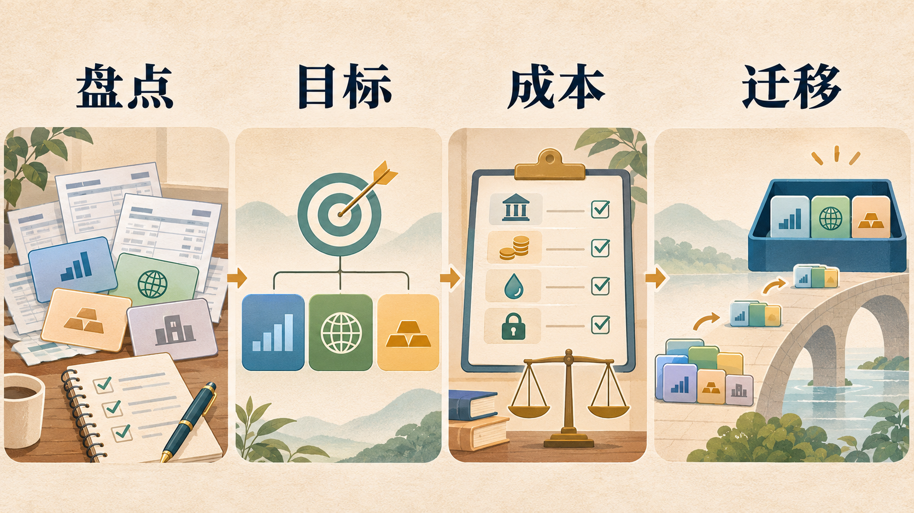

SH000905
持有中证500
PE / 10年分位25.70 / 49%
PB / 10年分位1.88 / 47%
当前 PE 位于近10年历史的 49.1% 分位，命中“持有”区间。
来源：雪球基金（近10年历史样本，项目本地重算分位）
2026年11月23日为星期一。上交所和深交所2026年休市安排显示，当日不在节假日休市区间，因此为A股交易日。报告生成时A股尚未收盘；NYSE与Nasdaq休市日历显示11月20日不属于美国股票市场休市日，四个指数最近已完成交易日均为2026年11月20日。
处理旧持仓不是把不喜欢的资产一次性清空。先盘点当前持有什么、费用和重叠，再确定目标资产暴露与账户位置，最后把税费、价差、流动性和再进入安排纳入同一迁移计划；卖出规则只有写清资金去向才形成闭环。
今天先列出已有持仓、费用、重叠暴露、账户限制与可变现条件，再写下目标暴露和迁移顺序。中证五百与沪深三百维持持有记录；纳斯达克一百与标普五百的定投信号只用于符合长期期限与流动性条件的既定新增资金，并在选择承载产品时核对折溢价和交易限制。
不要因为想简化组合就一次性卖出全部旧持仓，也不要把指数定投信号直接翻译成追买出现高溢价或临时停牌风险的产品；融资保证金比例调整也不构成借钱投资的理由。
事实：上交所将融资买入证券的最低融资保证金比例调整为百分之八十，自十一月三十日起施行；一只跟踪纳斯达克一百的跨境基金因二级市场价格明显高于份额参考净值，于今天开市起停牌至十点半。推断：杠杆规则和产品折溢价属于指数估值之外的制度与载体约束。不能据此判断：融资条件变化和单只产品停牌都不能证明指数短期方向，也不能替代对具体账户与产品的核验。
PE 决定行为，PB 辅助理解温度
当前 PE 位于近10年历史的 49.1% 分位，命中“持有”区间。
来源：雪球基金（近10年历史样本，项目本地重算分位）
当前 PE 位于近10年历史的 67.2% 分位，命中“持有”区间。
来源：雪球基金（近10年历史样本，项目本地重算分位）
当前 PE 位于近10年历史的 14.7% 分位，命中“定投”区间。
来源：雪球基金（近10年历史样本，项目本地重算分位）
当前 PE 位于近10年历史的 22.2% 分位，命中“定投”区间。
来源：雪球基金（近10年历史样本，项目本地重算分位）
只保留会影响长期决策的重要变量
事实：上交所十一月二十二日发布通知，自十一月三十日起，投资者融资买入证券时的融资保证金比例不得低于百分之八十；会员应对异常交易行为从严适用风险控制指标。推断：最低比例下降会释放部分融资容量，同时交易所要求会员保留差异化风控，制度变化影响的是杠杆条件。不能据此判断：规则调整不代表投资者应增加杠杆，也不能单独证明A股指数后续方向。
查看一手来源事实：基金管理人公告称，该基金二级市场价格明显高于基金份额参考净值，于十一月二十三日开市起至十点半停牌；若午间溢价仍高，可能申请下午继续停牌。公告还指出，跨境额度、外汇和市场供求都会影响折溢价。推断：指数估值、基金净值和二级市场成交价是三层不同事实，承载产品可能出现与指数信号相反的交易风险。不能据此判断：单只基金的溢价和停牌不能证明纳斯达克一百指数本身高估，也不能外推到所有跨境产品。
查看一手来源每天随机读透一个完整观点，而不是收藏更多标题
J.L. Collins Stock Series · 官网文章，发布于2018年6月28日
核心主张：从复杂旧组合转向简单系统时，第一步不是立即卖出，而是弄清当前持有、费用和用途，再确定目标资产配置，并把税费与账户限制纳入迁移路径。简化的价值来自减少未来反复决策，不来自一次性清仓。
“Tax laws change all the time.”
今天连接：今天的纳斯达克一百指数触发定投，但一只境内跨境产品同时提示高溢价和停牌风险。这正说明先确定指数暴露，再核对承载产品、账户限制与迁移成本；指数信号不能越过载体层约束。
不要这样做：不要照搬原文的2018年美国税率、标准扣除额、损失抵扣上限或账户转换路径，也不要把分步迁移误解为拖延所有必要处理。
